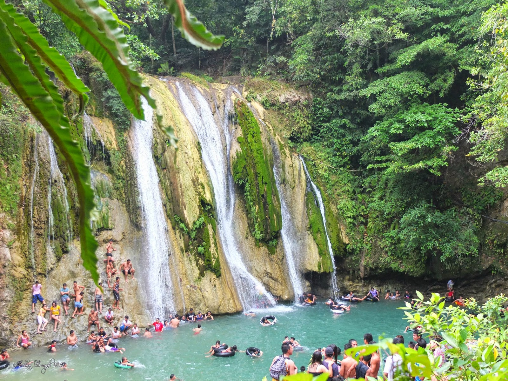
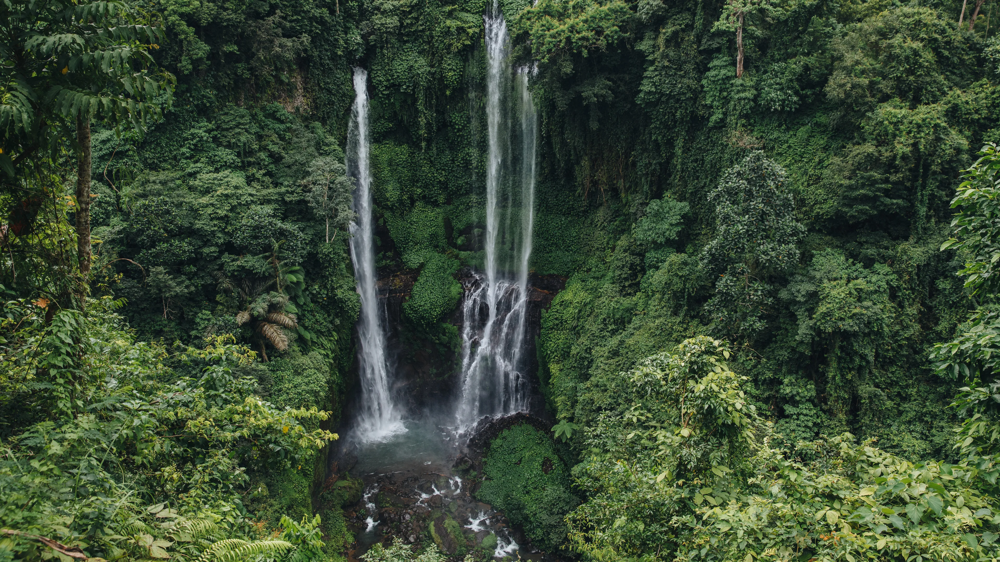
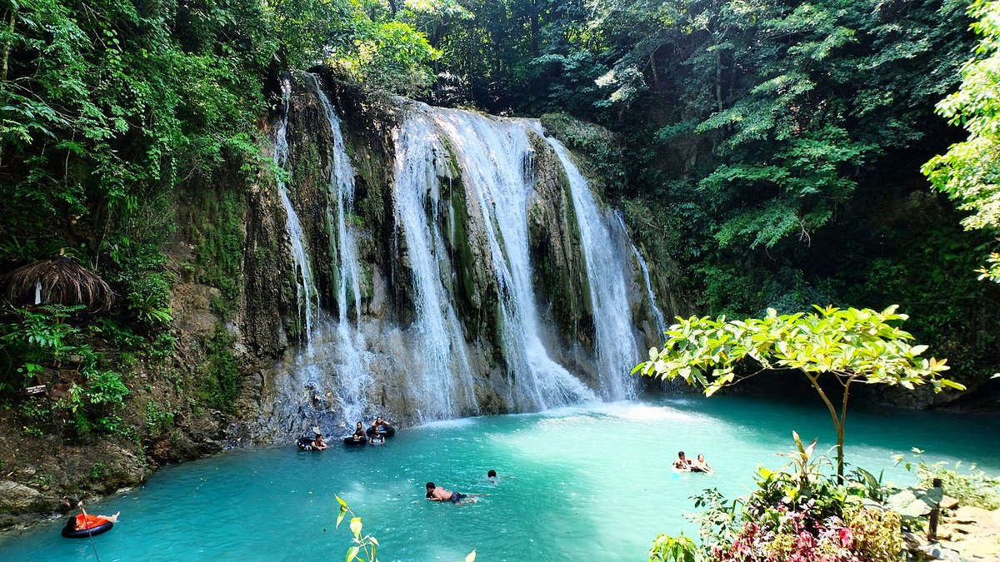

Location:
Brgy. Tandang Kutyo, Tanay, Rizal.
Best for: Families, Swimmers, and Picnic Lovers.
Vibe: Refreshing, Iconic, and Lush.


Daranak Falls
Refresh Your Soul in the Cool, Turquoise Basins of Tanay.
TDaranak Falls is perhaps the most iconic waterfall in the province, famous for its 14-meter drop and the vibrant turquoise color of its natural pool. It has been a beloved summer destination for decades, offering a refreshing escape from the tropical heat.
Brgy. Tandang Kutyo, Tanay, Rizal.

